Objetivo: Comparar os diferentes sistemas de projeções cartográficas e
conhecer outras formas de representação da realidade através dos mapas.
Digite seu nome
Introdução
Na aula passada, vimos a importância da escala
cartográfica e geográfica para representarmos a realidade através dos mapas.
Agora, do ponto de vista global, veremos como projetar o globo terrestre (que possui uma
forma de esfera) em um plano. O caminho para se tornar um explorador do espaço geográfico é árduo, mas
também é gratificante.
As projeções cartográficas realizam essa transformação da realidade tridimensional em
planos bidimensionais. Vamos conhecer os diferentes tipos de projeções, seu impacto na descoberta de novas
áreas pelo Planeta e aprofundar no estudo sobre a produção cartográfica.
Questões a serem respondidas no caderno sobre o tema da aula de hoje:
1. O que são projeções cartográficas e qual é o seu objetivo principal?
2. Explique brevemente os três tipos básicos de projeções cartográficas: cilíndrica, cônica e plana.
3. Por que os cartógrafos precisaram desenvolver diferentes tipos de projeções?
4. Descreva as características principais da Projeção de Mercator e mencione para que ela é mais
adequada.
5. Qual é a principal crítica à Projeção de Mercator em relação à representação dos continentes?
6. Explique a Projeção de Peter e quais são suas principais características.
7. Por que a Projeção de Peter foi considerada uma tentativa de romper com uma visão colonialista do
mundo?
8. O que são Projeções Planas ou Azimutais e qual é a sua característica principal?
9. Como as Projeções Cônicas funcionam e em que situações elas são mais utilizadas?
10. O que são anamorfoses geográficas e como elas diferem das projeções cartográficas tradicionais?
O que é uma projeção cartográfica?
Já sabemos alguns elementos dos mapas, como o título, a legenda, a escala, até fizemos uma
planta da escola! Agora, vamos discutir o problema de representar algo que é 3D em uma folha, por exemplo,
que é 2D, ou possui somente duas dimensões.
Os cartógrafos quebraram a cabeça para tornarem os mapas os mais fiéis possíveis à
realidade. Para isso, utilizaram bastante a Matemática com diversos cálculos. Utilizaram as coordenadas
geográficas para poder representar a superfície terrestre em um mapa. Tudo isso está ligado as projeções
cartográficas.
Projeções cartográficas - Constituem métodos matemáticos
para se projetar uma esfera em um plano. Uma região de escala grande como um município ao ser representada
em um mapa não sofre muitas distorções. Entretanto, para representar um mapa-múndi, há muitas dificuldades
em manter as formas dos continentes, sua área e posições sem distorcê-los. Há diversos tipos de se projetar
uma esfera em um plano:
A ideia principal é esta:
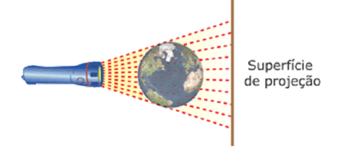
Fonte: Organizado pelo autor.
A partir desse modelo são projetados pontos possíveis da superfície terrestre. São mais de
200 tipos de projeções.
Quais os tipos de projeções existentes?
Existem três tipos básicos de projeções cartográficas: a cilíndrica, a
cônica e a plana ou azimutal, conforme as imagens abaixo:
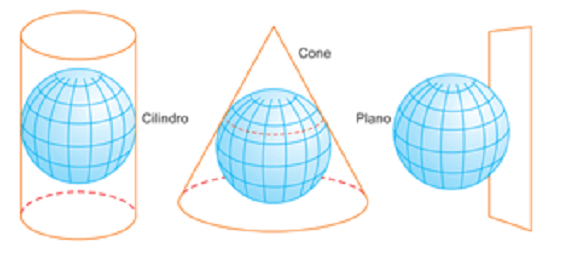
Fonte: Fonte: Moreira e Sene (2016, p. 60).
Observe que na projeção cilíndrica o
globo terrestre parece estar
envolvido por um cilindro de papel no qual são projetados os paralelos e os meridianos.
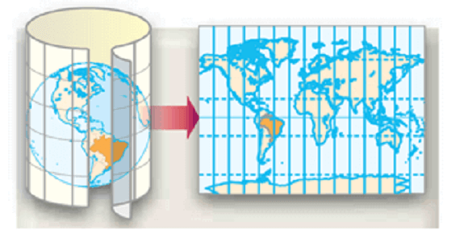
Fonte: Moreira e Sene (2016, p. 60).
Na projeção azimutal ou plana,a Terra parece ser tangenciada em
qualquer ponto por um pedaço de papel no qual são projetados os paralelos e os meridianos. Quando o globo é
tangenciado num dos polos, dizemos que se trata de uma projeção polar.
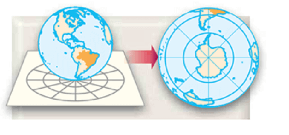
Fonte: Fonte: Moreira e Sene (2016, p. 60).
Já na projeção cônica,
o globo parece estar envolvido por um cone de papel no qual são projetados os paralelos e os meridianos.
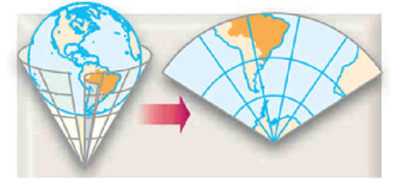
Fonte: Organizado pelo autor.
Teste seu conhecimento
Quais são os três tipos principais de projeções cartográficas?
As projeções distorcem a realidade?
Sabemos que todo mapa é uma representação aproximada do espaço terrestre, na medida que
depende do objetivo de o pesquisador escolher o que representar. Por isso que a escolha do tipo de projeção
já direciona a leitura do mundo e valoriza algum aspecto da realidade.
O globo terrestre não possui distorções, pois mostra diretamente como é na realidade o
Planeta. Sua desvantagem é que, na prática, é difícil ter uma visão do todo ao mesmo tempo. Veja aqui:
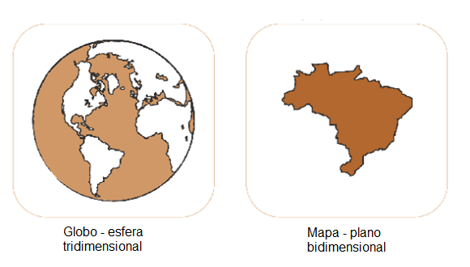
Fonte: Carvalho e Araújo (2011).
Teste seu conhecimento
Um mapa é a representação, sobre uma superfície plana, folha de papel ou monitor de vídeo,
da superfície terrestre, que é uma superfície curva. (JOLY, 1990).
A passagem de uma para outra suscita (provoca) várias dificuldades, dentre elas:
Projeções Cilíndricas
Projeção de Mercator
A projeção mais famosa utilizada até hoje foi elaborada pelo cartógrafo, matemático e
geógrafo belga Gerardus Mercator na segunda metade do século XVI.
Ela é perfeita para navegação, principalmente nas regiões intertropicais (entre os trópicos
de Câncer e de Capricórnio) pois as direções podem ser traçadas em linhas retas sobre o mapa. Veja abaixo:
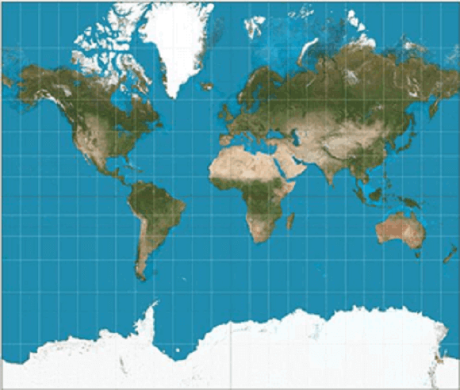
Fonte: Fonte: Wikipedia.
Principais características:
Apresenta paralelos retos e horizontais e os meridianos retos e verticais;
Possui uma deformação exagerada nas regiões de elevadas latitudes;
é a mais utilizada para representação total da Terra (mapas-múndi).
é conforme, isto é, preserva os ângulos e formas dos continentes,
mas distorce a área (a proporção do tamanho dos países).
As distorções visíveis podem ser observadas no tamanho da Groelândia, por exemplo, em
comparação à da América do Sul. Como a Groenlândia está situada em altas latitudes, a distorção é maior.
Outra deformidade ocorre na Antártida, deixando-a com uma área bem maior. Por outro lado, o contorno dos
continentes é bem desenhado e de fácil visualização.
Essa projeção foi muito utilizada na época da expansão marítima do século XVI e reflete a
visão eurocêntrica do mundo, ou seja, tendo a Europa no “centro de visão” do mapa. (Faria, 2016).
Os mapas carregam as ideologias e a cultura de quem os produziu. Ele revela, nesse caso, o
contexto de domínio de um grupo ou nação sobre outra, resumindo: a geopolítica. Não é à toa que esse tipo de
mapa com a Europa no centro serviu para alimentar durante séculos a ideia na qual os países “de cima” são
superiores aos “de baixo”. Mas nem todas as projeções seguem essas ideias deterministas.
Teste seu conhecimento
Assinale abaixo se o texto é verddeiro ou falso.
A Projeção de Mercator - Surgida no século XVI, essa projeção é cilíndrica e equivalente
(preserva as áreas). Porém provoca grande distorção nas áreas das superfícies representadas, principalmente
as
regiões de alta latitude que ficam maiores do que realmente são na realidade. América do Norte, Groenlândia
e Europa parece maiores do que são.
Teste seu conhecimento
Assinale todas as alternativas que satisfazem as características da projeção de Mercator:
Projeção de Peter
Na década de 1970, após muitas outras projeções terem sido realizadas, o historiador e
cartógrafo Arno Peters aperfeiçoou a projeção cilíndrica de James Gall do final do século XIX e elaborou uma
projeção que preservava as áreas dos continentes, o qual ficou conhecida como projeção equivalente.
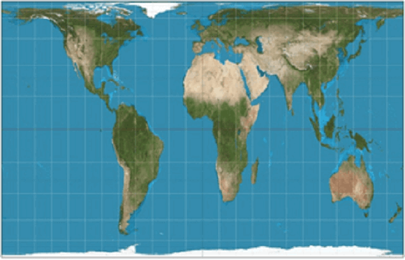
Fonte: Wikipedia.
Nessa projeção há um destaque aos países de baixas latitudes, uma vez que buscou preservar
suas áreas (tamanho) originais. Por outro lado, atendeu aos interesses dos Estados que se tornaram
independentes após a Segunda Guerra Mundial (1939-1945) e que, nesse período, eram considerados
subdesenvolvidos, a maioria desses países estão, de fato, na parte sul do globo. Foi considerada uma das
formas para romper com uma visão colonialista do mundo.
Percebe-se um alongamento dos continentes no sentido norte-sul. A Groenlândia nesse mapa,
agora aparece bem menor que o Brasil e a África.
Principais características:
Altera as formas para manter as reais proporções dos continentes;
Apesar de deformar as áreas, procura mantê-las mais próximas do tamanho real;
Destaca o continente africano no centro;
Propõe a valorização do mundo subdesenvolvido, mostrando sua área real.
Teste seu conhecimento
Projeção de Peters - Criada em 1973, essa é uma projeção cilíndrica equivalente (mantém as
áreas das superfícies representadas, apesar de distorcer as formas). É tido como uma projeção
terceiro-mundista, uma vez que, em comparação com a de Mercator, é mais fiel entre as verdadeiras áreas dos
países, sendo a América Latina, África e Ásia ficam em destaque.
Projeções Planas ou Azimutais
A projeção plana ocorre quando um plano toca um ponto (tangencia) do globo para
mapeá-lo.
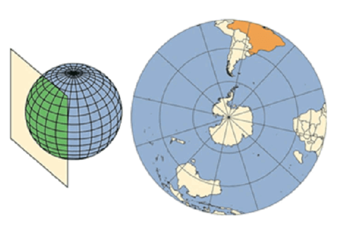
Fonte: Organizado pelo autor.
Os pontos que não tocam o plano são prolongados e daí que surgem as distorções. Nessa
projeção, qualquer ponto do globo pode ser tornar o centro do mapa. Nesse caso, as distorções se aproximam
de zero. À medida em que nos afastamos do centro da projeção, as distorções aumentam bastante
(sistematicamente).
Veja esse exemplo em
que o centro da projeção é o encontro da latitude 0º e da longitude 0º.
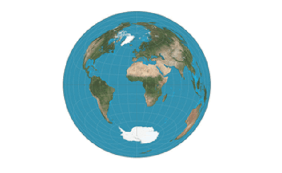
Fonte: Organizado pelo autor.
Ou uma projeção plana da
América do Norte.
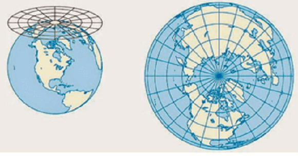
Fonte: Organizado pelo autor.
Essa projeção está muito ligada a geopolítica (as relações de poder entre as nações), pois
o cartógrafo pode direcionar o centro das atenções para qualquer território no mundo.
Também é muito utilizada para navegações aérea e marítima. A Organização das Nações Unidas
– ONU a utiliza como seu mapa-símbolo.
Na época da Guerra Fria, esse tipo de projeção era utilizado para representar o mundo bipolar, isto é, a
antiga divisão entre Estados Unidos e União Soviética.
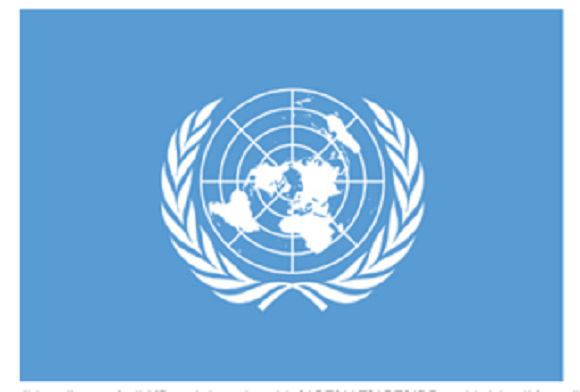
Fonte: Wikipedia.
Projeções cônicas
A projeção cônica
ocorre a partir de um cone imaginário em que os meridianos formam uma rede de linhas retas, que convergem
(que vão para um local em comum) para um ponto, e os paralelos formam círculos concêntricos (com o mesmo
centro, um dentro do outro).
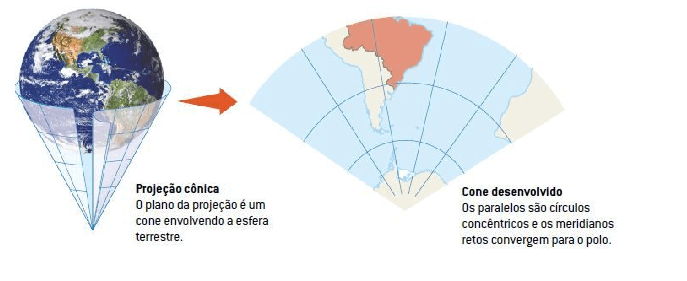
Fonte: Organizado pelo autor.
Principais características:
Apresenta paralelos circulares e meridianos radiais, isto é, retas que se originam de um
único ponto;
É usado principalmente para representar países ou regiões de latitudes intermediarias (não
diretamente nos polos ou no equador), mas pode ser usada por outras latitudes.
Teste seu conhecimento
Observe a imagem e responda:
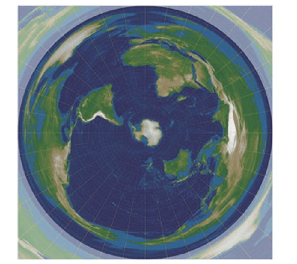
Fonte: Organizado pelo autor.
A projeção_____________________ sempre é construída a partir de um ponto,
chamado____________
Nesse ponto, a distorção é__________________. À medida que nos afastamos de tal ponto, as
____________.
Sobre essa projeção cartográfica, complete, respectivamente, as lacunas do trecho acima:
Anamorfoses
Existem outros tipos de mapas que não chegam a ser uma projeção cartográfica, mas sim mapas temáticos que
distorcem as áreas dos continentes ou países de acordo com as informações que norteiam o mapa.
São chamadas de anamorfose geográfica, em que cada país é redesenhado de
forma que seu polígono sofre uma deformação proporcional a um tema como a população dos países, ou outra
variável.
Exemplo. A população da China que é, aproximadamente de 1,5 bilhão de pessoas e da Índia
com 1.4 bilhão irão aparecer maiores no mapa.
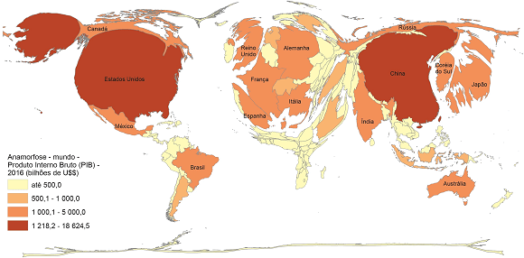
Fonte: Organizado pelo autor.
Nesse mapa, por exemplo, o Paquistão que tem uma área de 796 100 km² , muito menor do que a
do Brasil (8.515.759) km² possui sua forma aumentada.
Já com a Rússia ocorre o inverso, com uma área territorial de 17.098.250 km2, quase o
dobro da área do Brasil, teve seu polígono deformado e diminuído, pois possui uma população um pouco menor
que o Brasil.
Não existe pergunta boba! A Ciência é feita de perguntas!
P: Existe uma projeção que está no meio
termo, entre a projeção de Mercator e a de Peters?
R: Há a projeção cilíndrica de Robinson elaborada pelo
cartógrafo e geógrafo norte-americano Arthur Robinson (1915-2004). O interessante é
que os meridianos estão em forma de curva ou elipse, enquanto os paralelos permanecem retos. Ela é chamada
de afilática, pois não deforma tanto as áreas e nem as formas dos continentes. Por isso é a
mais utilizada para representar o globo terrestre.
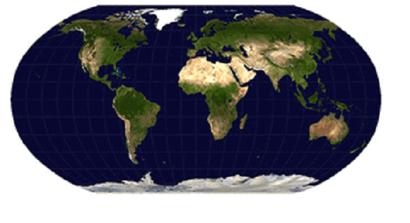
Fonte: commons.wilimedia.org.
Ainda dentro das projeções cilíndricas, destaca-se a de Mollweide , com meridianos igualmente
curvos e de forma elíptica, uma pouco mais achatada nos polos. A vantagem desta é que as zonas centrais
possuem grande exatidão em seu desenho, mas as extremidades apresentam grandes distorções.
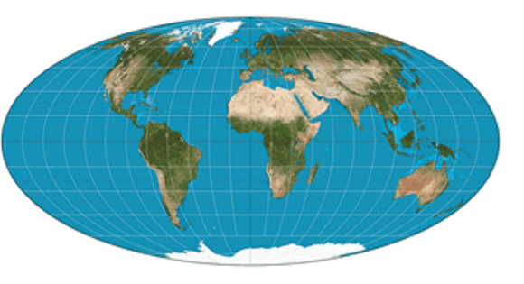
Fonte: commons.wilimedia.org.
E uma última projeção, para ilustrar, refere-se a de Goode, chamada de projeção descontínua ou
interrompida.
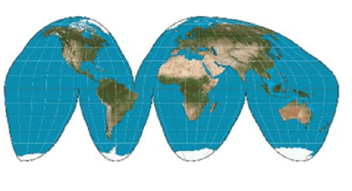
Fonte: Organizado pelo autor.
Ao segmentar algumas áreas dos oceanos Pacífico, Atlântico e Índico, ele queria manter as
formas das terras emersas totalmente conservada, com exceção da Antártica e Groenlândia. Sua vantagem está
em representar temas como a distribuição de indústrias, Recursos minerais ou de indicadores socioeconômicos.
P:Hoje em dia, com a existência de
satélites e internet, ainda precisamos de projeções cartográficas?
R: Essa é uma ótima pergunta. O assunto sobre a união da
tecnologia com a produção cartográfica é fundamental e vamos ver esse assunto também na próxima aula. Os
mapas nos ajudam na compreensão espacial das coisas, dos processos que os eventos humanos ou naturais criam.
Hoje, mais do que nunca, o mundo se encontra praticamente todo mapeado. Mesmo as áreas não visitadas, estão
potencialmente sendo fotografadas pelos satélites. Por isso o espaço tem uma importância fundamental no
mundo atual. Todos os lugares foram atingidos, direta ou indiretamente, pelo processo produtivo, o que cria
uma hierarquização entre os agentes. Cada ponto do território mapeado torna-se único, repleto de
potencialidades, sociais, naturais etc.
P:Quais temas de estudo os mapas podem
representar?
R: Os mapas temáticos podem nos dar uma visão de
conjunto sobre inúmeros tópicos, quais sejam: sobre o papel da informação no mundo atual; o grau de
tecnologia empregado nas atividades produtivas, o funcionamento do crédito pelo território, o intercâmbio de
bens naturais e sociais pelos Estados, dentre inúmeros outros. Nesse sentido, os mapas não servem apenas
para localização estrita, mas para analisar processos que estão ocorrendo, como a pandemia de Covid-19 que
se espalhou por todo o Planeta.
Agora é com você!
Vamos analisar diferentes tipos de mapas temáticos com distintas projeções
cartográficas. Dividam-se em grupos de 3 alunos e escolham 3 mapas com projeções cilíndricas, planas e
cônicas respectivamente.
Escreva em seu caderno, após discutirem com os colegas, em forma de
palavras-chave, os seguintes questionamentos:
Quais as diferenças entre os mapas a partir das projeções;
Como o mapa revela a informação (quais os símbolos utilizados, desenhos etc.) e
qual é a informação descrita.
Vantagens e desvantagens do uso de determinada projeção..
Ao final, um dos integrantes do grupo irá descrever um mapa e as informações contidas nele.